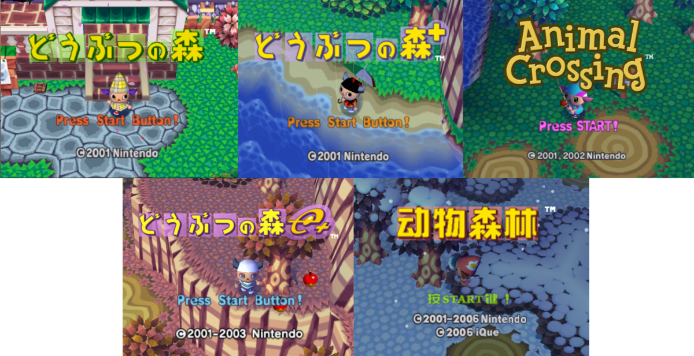

Animal Forest / Animal Crossing (N64/Gamecube)
The release of the original Animal Crossing.... is weird.
The game started as a late JP-only release for the N64, which, yeah, understandable... THEN they ported it to the Gamecube, and i dont mean emulated, its a straight up PORT. With like, added features.
And then some chad translation team decided to make an ENGLISH TRANSLATION with even more improvements! And then the Japanese team was like "woah.. coolll" and then BACKPORTED the english translation and made a NEW improved version that is like, the DEFINITIVE version of AC?
And then there was the EU version, which was a port of the original US version, with the E-Reader taken out.. and then the CHINESE version for the iQue, that was translated by ONE GUY.
And that's just the first game's RELEASE. fucking wild, man.
working on the rest of the shrine,,,,